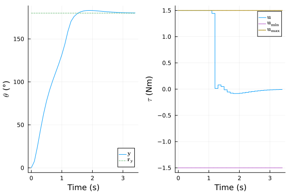
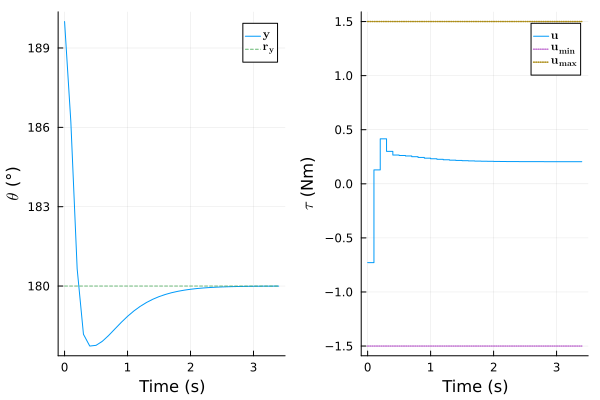

Manual: ModelingToolkit Integration
Pendulum Model
This example integrates the simple pendulum model of the last section in ModelingToolkit (MTK) framework and extracts appropriate f! and h! functions to construct a NonLinModel. An NonLinMPC is designed from this model and simulated to reproduce the results of the last section.
This simple example is not an official interface to ModelingToolkit.jl. It is provided as a basic starting template to combine both packages. There is no guarantee that it will work for all corner cases.
The example works on ModelingToolkit.jl v9.50 to 9.76 (corresponding to the following [compat] entry: ModelingToolkit = "9.50 - 9.76").
We first construct and instantiate the pendulum model:
using ModelPredictiveControl, ModelingToolkit
using ModelingToolkit: D_nounits as D, t_nounits as t, varmap_to_vars
@mtkmodel Pendulum begin
@parameters begin
g = 9.8
L = 0.4
K = 1.2
m = 0.3
end
@variables begin
θ(t) # state
ω(t) # state
τ(t) # input
y(t) # output
end
@equations begin
D(θ) ~ ω
D(ω) ~ -g/L*sin(θ) - K/m*ω + τ/m/L^2
y ~ θ * 180 / π
end
end
@named mtk_model = Pendulum()
mtk_model = complete(mtk_model)\[ \begin{align} \frac{\mathrm{d} \theta\left( t \right)}{\mathrm{d}t} &= \omega\left( t \right) \\ \frac{\mathrm{d} \omega\left( t \right)}{\mathrm{d}t} &= \frac{ - g \sin\left( \theta\left( t \right) \right)}{L} + \frac{\tau\left( t \right)}{L^{2} m} + \frac{ - K \omega\left( t \right)}{m} \\ y\left( t \right) &= 57.296 \theta\left( t \right) \end{align} \]
We than convert the MTK model to an input-output system:
function generate_f_h(model, inputs, outputs)
(_, f_ip), dvs, psym, io_sys = ModelingToolkit.generate_control_function(
model, inputs, split=false; outputs
)
if any(ModelingToolkit.is_alg_equation, equations(io_sys))
error("Systems with algebraic equations are not supported")
end
nu, nx, ny = length(inputs), length(dvs), length(outputs)
vx = string.(dvs)
p = varmap_to_vars(defaults(io_sys), psym)
function f!(ẋ, x, u, _ , p)
try
f_ip(ẋ, x, u, p, nothing)
catch err
if err isa MethodError
error("NonLinModel does not support a time argument t in the f function, "*
"see the constructor docstring for a workaround.")
else
rethrow()
end
end
return nothing
end
(_, h_ip) = ModelingToolkit.build_explicit_observed_function(
io_sys, outputs; inputs, return_inplace = true
)
u_nothing = fill(nothing, nu)
function h!(y, x, _ , p)
try
# MTK.jl supports a `u` argument in `h_ip` function but not this package. We set
# `u` as a vector of nothing and `h_ip` function will presumably throw an
# MethodError it this argument is used inside the function
h_ip(y, x, u_nothing, p, nothing)
catch err
if err isa MethodError
error("NonLinModel only support strictly proper systems (no manipulated "*
"input argument u in the output function h)")
else
rethrow()
end
end
return nothing
end
return f!, h!, p, nu, nx, ny, vx
end
inputs, outputs = [mtk_model.τ], [mtk_model.y]
f!, h!, p, nu, nx, ny, vx = generate_f_h(mtk_model, inputs, outputs)
Ts = 0.1
vu, vy = ["\$τ\$ (Nm)"], ["\$θ\$ (°)"]A NonLinModel can now be constructed:
model = setname!(NonLinModel(f!, h!, Ts, nu, nx, ny; p); u=vu, x=vx, y=vy)NonLinModel with a sample time Ts = 0.1 s, RungeKutta(4) solver and:
1 manipulated inputs u
2 states x
1 outputs y
0 measured disturbances dWe also instantiate a plant model with a 25 % larger friction coefficient $K$:
mtk_model.K = defaults(mtk_model)[mtk_model.K] * 1.25
f_plant, h_plant, p = generate_f_h(mtk_model, inputs, outputs)
plant = setname!(NonLinModel(f_plant, h_plant, Ts, nu, nx, ny; p); u=vu, x=vx, y=vy)NonLinModel with a sample time Ts = 0.1 s, RungeKutta(4) solver and:
1 manipulated inputs u
2 states x
1 outputs y
0 measured disturbances dController Design
We can than reproduce the Kalman filter and the controller design of the last section:
α=0.01; σQ=[0.1, 1.0]; σR=[5.0]; nint_u=[1]; σQint_u=[0.1]
estim = UnscentedKalmanFilter(model; α, σQ, σR, nint_u, σQint_u)
Hp, Hc, Mwt, Nwt = 20, 2, [0.5], [2.5]
nmpc = NonLinMPC(estim; Hp, Hc, Mwt, Nwt, Cwt=Inf)
umin, umax = [-1.5], [+1.5]
nmpc = setconstraint!(nmpc; umin, umax)NonLinMPC controller with a sample time Ts = 0.1 s, Ipopt optimizer, UnscentedKalmanFilter estimator and:
20 prediction steps Hp
2 control steps Hc
0 slack variable ϵ (control constraints)
1 manipulated inputs u (1 integrating states)
3 estimated states x̂
1 measured outputs ym (0 integrating states)
0 unmeasured outputs yu
0 measured disturbances dThe 180° setpoint response is identical:
using Plots
N = 35
res_ry = sim!(nmpc, N, [180.0], plant=plant, x_0=[0, 0], x̂_0=[0, 0, 0])
plot(res_ry)
and also the output disturbance rejection:
res_yd = sim!(nmpc, N, [180.0], plant=plant, x_0=[π, 0], x̂_0=[π, 0, 0], y_step=[10])
plot(res_yd)
Acknowledgement
Authored by 1-Bart-1 and baggepinnen, thanks for the contribution.